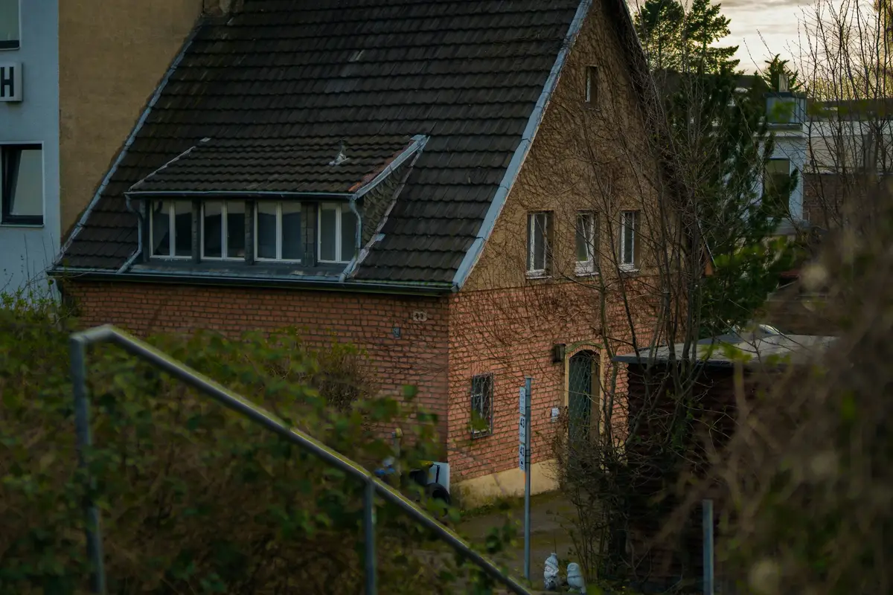
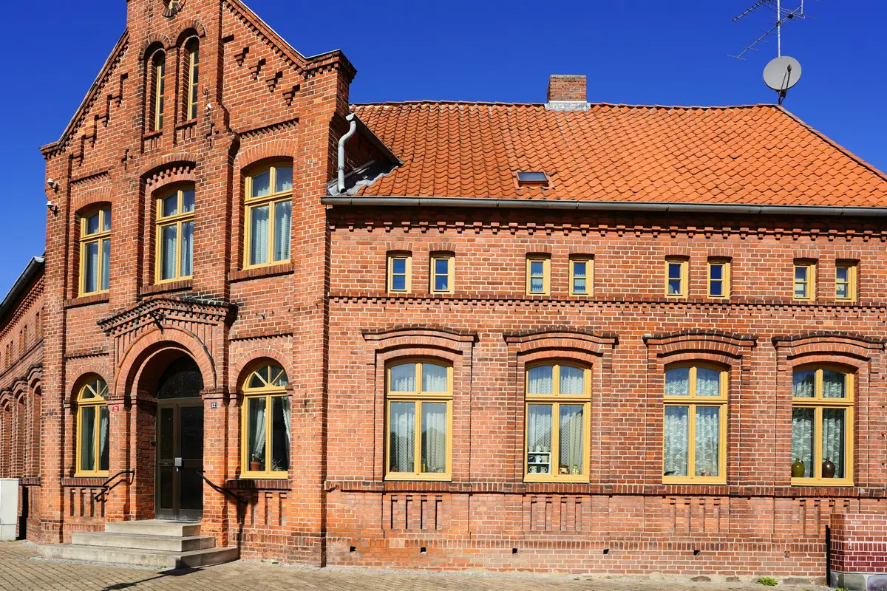

Wertermittlung von Wohngebäuden
Die Wertermittlung ist die Einschätzung des aktuellen Marktwertes eines Grundstücks oder Gebäudes durch einen Fachmann. Wir haben uns auf Gutachten für Wohngebäude spezialisiert und berücksichtigen dabei besonders den energetischen Zustand.


Drei Verfahren, ein realistisches Gesamtbild.
Vergleichswert-, Sachwert- und Ertragswertverfahren berücksichtigen Lage, Größe von Gebäude und Grundstück, baulichen Zustand, Ausstattung, Nutzungspotenzial und einiges mehr. Unsere Gutachten werden immer unter Berücksichtigung aller drei Verfahren erstellt, damit sich ein realistisches Gesamtbild ergibt.
Der energetische Zustand entscheidet mit.
Oft werden notwendige Maßnahmen nicht erkannt oder ihre Kosten zu niedrig angesetzt. Die bei Renditeobjekten beliebte Regel „Jahresnettokaltmiete mal Faktor 20 bis 25“ funktioniert nicht mehr, wenn aufgrund gesetzlicher Vorgaben hohe Kosten für energetische Sanierung drohen. Käufer von Renditeobjekten und besonders Erben sollten das bedenken, auch gegenüber dem Finanzamt.
Die Faktor-Rechnung, ehrlich gerechnet.
Wählen Sie eine Jahresnettokaltmiete und den Faktor. Darunter sehen Sie, was ein energetischer Sanierungsbedarf aus dem vermeintlichen Wert macht. Alle Beträge sind Beispiele.
Jahresnettokaltmiete
Faktor
Energetischer Sanierungsbedarf
Der Sanierungsbedarf drückt den Wert um 23 %. Ein Gutachten setzt diese Kosten belastbar an.
Für wen sich das Gutachten lohnt
Ein realistisch eingeschätzter Wert und ein ehrliches Gutachten: Es findet sich oft schneller ein Käufer, und Interessenten können die Immobilie nicht schlechtreden.
Wer ein Renditeobjekt kauft, sollte den Sanierungsbedarf kennen, bevor er den Faktor akzeptiert.
Bei der Bewertung gegenüber dem Finanzamt zählt der energetische Zustand mit. Ein Gutachten belegt ihn.
Gutachten für Ihr Wohngebäude
Nennen Sie uns Objekt und Anlass. Wir erklären Umfang und Ablauf.